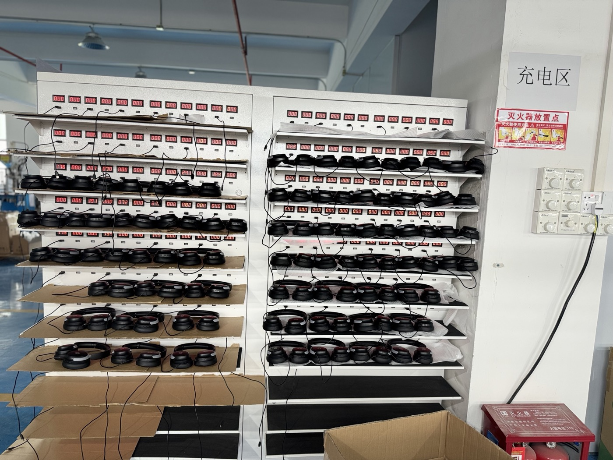
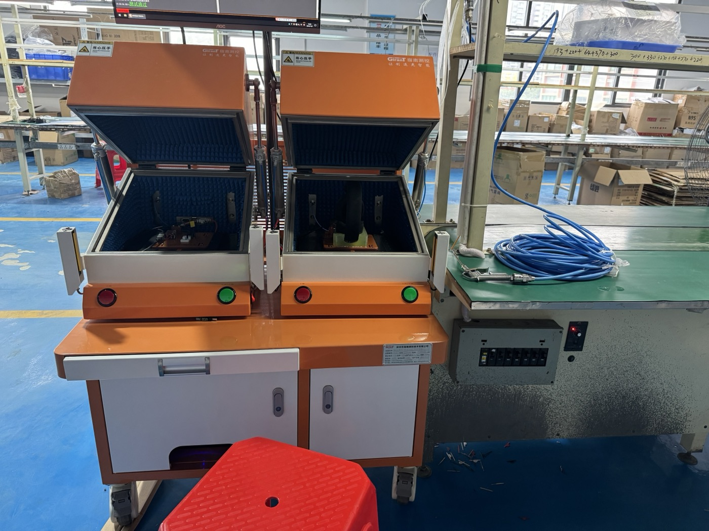
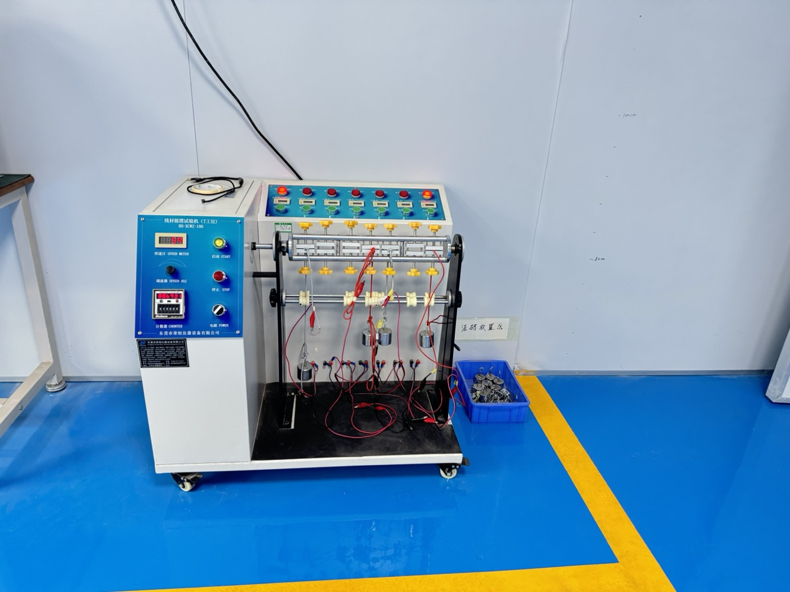
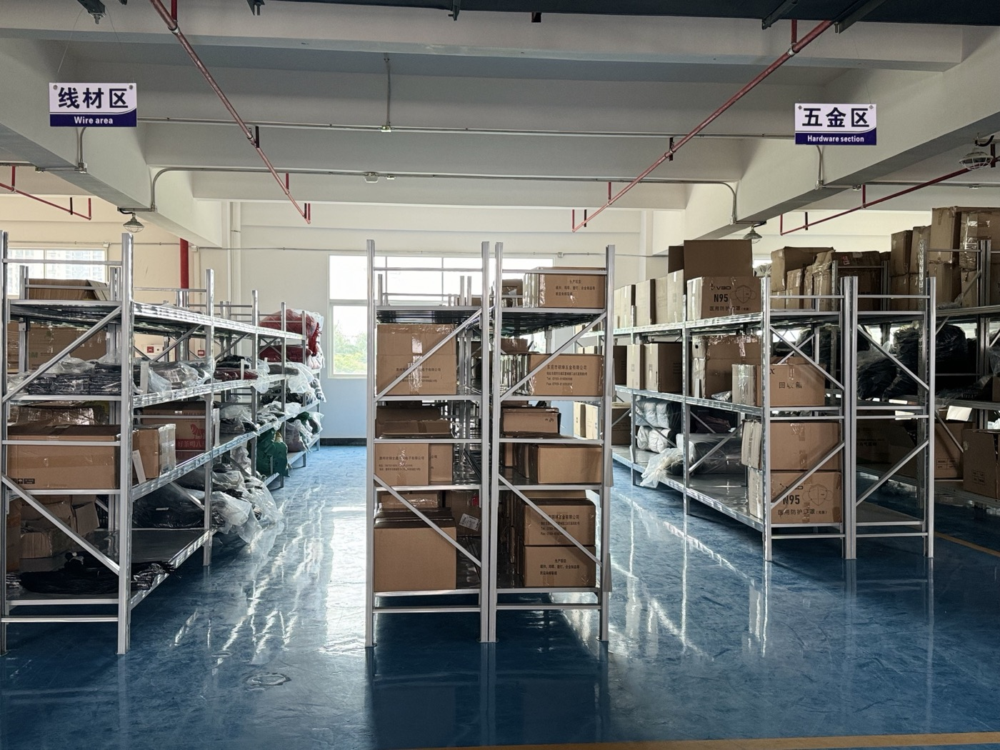

Packaging material storage
This reference helps buyers ask how cartons, inserts, manuals and sample packing notes should be prepared for the selected headset model.

Product evidence
Before choosing a gaming headset model, review the evidence that can be checked from model pages, product images, workshop process references, sample discussion and buyer questions: connection type, 2.4GHz receiver or cable detail, microphone, comfort, color direction, accessories and packaging needs.

Quick answer
Workshop references
These photos are used as process references only. They help buyers ask clearer questions about assembly, charging, cable review, packaging materials and parts storage; they do not state factory size, production capacity, certification or test results.
This reference helps buyers ask how cartons, inserts, manuals and sample packing notes should be prepared for the selected headset model.

For wireless headset samples, ask which charging checks apply to the selected version and what should be reviewed before approval.

Fixture photos help buyers ask which sample checks apply to the model, then confirm the actual check scope by version instead of assuming results from a photo.

For wired or charging-cable questions, ask whether cable direction, connector fit and swing-test scope should be reviewed for your sample.

Parts-area references help buyers ask how cables, hardware and accessories are prepared before sample assembly or packaging discussion.
Checklist
These checks keep the page aligned with real buyer intent instead of generic product wording.
Confirm whether the headset story is wired, 2.4G wireless, Bluetooth or tri-mode. Link the answer to the correct model page.
For wireless models, show receiver detail when available. For wired models, show cable direction and connector story clearly.
Check whether the product image shows a boom microphone, detachable direction or built-in communication story. For a deeper review, see the gaming headset microphone performance guide.
Review headband shape, ear cushion size, wearing angle and whether the product image gives enough detail for sample discussion.
Check whether the color direction fits the target market and whether the earcup logo area is clear for custom branding discussion.
Before asking for packaging, confirm model, quantity direction, logo needs, manual language, target market and any process references that should guide the sample review.
Example
The G941 image set gives enough visible evidence to support an article, product page update, LinkedIn post and sales follow-up message.
Useful for gaming style, red accent detail, boom microphone and product image posts.

Useful for cleaner product positioning, softer color direction and alternative visual comparison.
The receiver detail creates a concrete point for 2.4G wireless headset explanation and product review.
The same evidence can support a website article, G941 model page, LinkedIn post and sales follow-up message.
FAQ
Check clear product images, connection type, receiver detail for wireless models, microphone structure, comfort design, logo area, packaging direction and sample availability.
Product images help buyers check visible details such as headband shape, ear cushion size, boom microphone, receiver, cable direction, logo area and color styling before requesting samples.
The G941 product notes, G941 product page, wireless gaming headset page, wired gaming headset page and sample request page support product review.
No. Workshop photos are useful process references for assembly, charging, cable, packaging or sample-review questions. Factory size, capacity, certification and test results should only be cited after separate document or live-review confirmation.
Useful pages
Share the model, destination market, quantity range and the product, packaging or document details that still need verification.